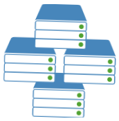

Applications
Plateforme d'exploitation (Sites WEBDEV, Webservices, bases de données HFSQL,...)

En savoir plus
Cluster WEBDEV
Serveurs d'application en mode cluster (Sites WEBDEV et Webservices)
Développement
Plateforme de développement (GDS : Gestionnaire de sources, Centres de Contrôle, méridien de traduction)
Télémétrie
Plateforme de télémétrie
PCSCloud vous propose des solutions «Cloud» optimisées pour les environnements de développement WINDEV, WEBDEV, WINDEV Mobile et pour HFSQL.
PCSCloud met à votre disposition une ou plusieurs plateformes évolutives qui vous permettent d'exploiter des bases de données HFSQL, des applications, et également des sites WEBDEV.
PCSCloud vous propose également des plateformes pour la virtualisation des projets de développement PC SOFT.